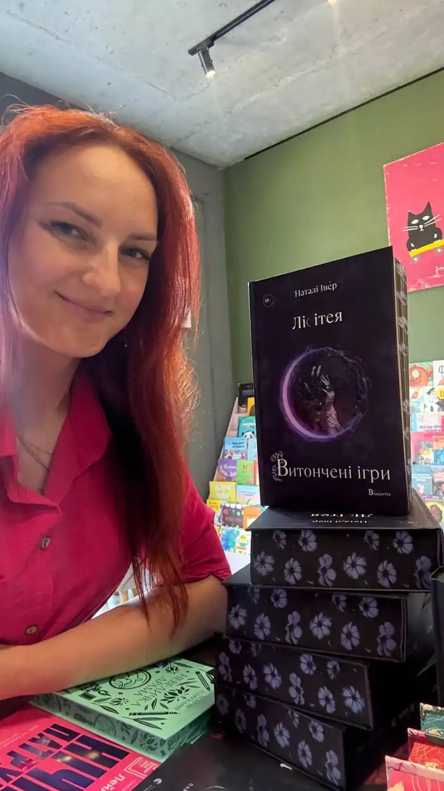

Наталі Іве́р (справжнє ім'я Кирилова Наталія Вікторівна) народилася 17 січня 1988 року в місті Первомайськ Миколаївської області, де минули її дитинство та юність. З раннього віку читала багато казок, особливо полюбляла світові казки й міфи давнього Риму й Греції. Любов до письма з'явилася ще у молодшій школі. Завдяки підтримці батьків не соромилася своєї творчості й охоче брала участь в шкільних літературних конкурсах.
У 2005 році на конкурсі казок імені Андре Годійо в Києві її роботу відзначили серед 2000 заявок. Авторка отримала шосте, спеціальне місце, попри передбачені 5. Того ж року майбутня письменниця переїхала до міста Ізмаїл Одеської області, закінчила інститут водного транспорту за спеціальністю "Філологія" та одружилася. З 2011 працює копірайтеркою та перекладачкою на фрілансі. Поліглотка з великим досвідом (у 2016-2022 активно вела блог про мови, проводила прямі ефіри з носіями, перемогла у поліглотському челленджі зі ста учасниками, який тривав пів року, та організовувала власні клуби) Володіє шістьма іноземними мовами. У серпні 2025 дебютувала з романом "Лісітея. Витончені ігри" , першою частиною циклу "Ігри верховних правителів" від видавництва "Відкриття". Реліз другого тому — "Лісітея. Звабливі ігри" — запланований на січень 2026 року. У грудні 2025 у видавництві "Мірабіліс" вийде друком збірка різдвяних роментезі повістей, до якої увійдуть два твори: "Сонце в інеї" (спін-оф циклу "Ігри верховних правителів") та "Сніжні крила" — повість Рін Воарг (авторки затишного роментезі "Корделія"). Хоч ці історії різні за настроєм, їх об'єднує спільна атмосфера: магія Різдва, затишок, фольклорні мотиви та любов, що дарує надію. Наталі Івер — авторка першого українського роментезі про фейрі, яке здобуло чисельні схвальні відгуки й стало хітом буктоку у 2025. Своїм успіхом письменниця завдячує чоловікові, який у всьому її підтримує, а також ARC— та бета-рідерам і читачам, чиї щирі емоції у відгуках надихають творити далі. Книга перекладена англійською мовою та скоро з'явиться на Amazon. Також триває переклад на італійську та іспанську мови.